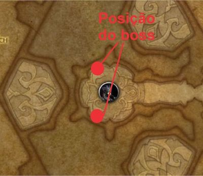
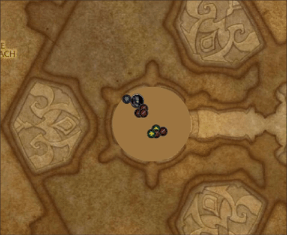
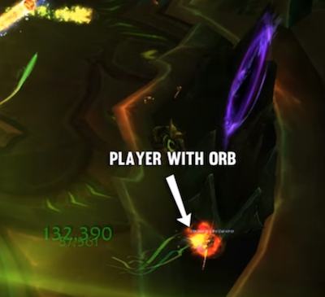

Portal Keeper Hasael
Resumo
- A luta possui um boss e 3 minibosses que serão ativados com o decorrer da luta. Os portais serão ativados de acordo com a vida do boss.
- 90% VERMELHO
- 60% VERDE
- 30% ROXO
- O lust é usado após o último portal
Boss
Tanks
- Trocar com 3 ou 4 stacks de para evitar que o dano na raid seja muito alto
- Posicionar o boss de frente para a parede (tank de costas para parede) 
Todos
- Stun nos adds que serão sumonados
- Mover com o grupo durante

-
Mover para proxima posição de tank durante (apenas melee e tank)

Portais
Enviar grupos com pelo menos 1 Tank e 1 Healer, a quantidade de DPS depende da composição.
- O objetivo é matar o miniboss o mais rápido possível antes que o tank com o boss ganhe muita stack de .
Vermelho (90%)
- Interromper e .
- Tankar o miniboss longe das orbs
- Desviar dos circulos que irão aparecer por causa da
Verde (60%)
Mesmo grupo do Vermelho + 1 healer, se necessário.
- Interromper
- : Manter a vida do grupo média, pois quanto mais vida, maior o dano recebido.
- Prioridade tirar o player marcado pela
- Healers precisam manter a vida do player em torno de 2.4m e 3m
- O posicionamento é junto ao minibosss
- Healers com a Hasabel devem utilizar CD, pois o dano será maior por conta do .
Roxo (30%)
Mesmo grupo do Verde
-
Precisa que a Orb do portal VERMELHO seja levada para o portal ROXO
- Para isso, um player precisa entrar no portal VERMELHO, ir até uma orb e levar a orb em 10 segundos para o portal ROXO.
- DEVE ESPERAR O TEMPO DO DEBUFF ACABAR! 
- irão aparecer na Hasael e precisarão matar junto com os imps (continua com a rotação de stun em area).